Máquinas virtuales
Poca gente quiere entrar de lleno a Linux eliminando por completo su sistema operativo, y es normal si nunca han usado Linux antes.
Por suerte, no tienes que hacerlo, durante el curso usaremos una máquina virtual junto a Windows.
Antes de aprender cómo crear la máquina virtual, vamos a hablar sobre formas de ejecutar Linux.
Bare metal
Para mi, la mejor forma de aprender, te descargas una iso con la distro que prefieras, la grabas en un USB, lo pinchas en tu ordenador y lo instalas borrando todo tu sistema operativo.
Tendrás la mejor experiencia usando tu distro. Una de las reglas en el desarrollo unix es:
Haz una cosa y hazla bien
En cuanto intentamos que nuestra máquina sea dos cosas a la vez, será más posible encontrar problemas.
Dual boot
La mayoría de distribuciones te permiten crear un dual boot, de forma que puedas convivir con tu sistema operativo original y tu distro de linux.
Funciona, y para mucha gente tiene sentido elegir esta forma de trabajar, pero tiene varias pegas:
- Aumento de complejidad: Gestionar particiones, cargadores de arranque y actualizaciones de ambos sistemas.
- Problemas de arranque: Es fácil que una actualización de Windows o del gestor de arranque se lleve por delante uno de los sistemas.
- Espacio de almacenamiento: Cada sistema tiene su instalación propia, consumes mucho espacio.
- Compatibilidad de sistemas de archivos: Aunque una partición puede ser compartida entre ambos sistemas para tener disponibles archivos en ambos, los sistemas de archivos de los dos son completamente diferentes.
- Cifrado y arranque seguro: Windows implementa BitLocker y Secure Boot, que complican el uso de dual boot.
Live USB
En lugar de instalar Linux en tu disco duro, puedes instalarlo en un USB o disco duro externo, y arrancar desde ahi, Ventoy es especialmente cómodo para esto.
Es útil tener uno de estos USBs, te servirá para recuperar sistemas (independientemente de si son windows, mac o linux) y puedes tener tu Linux listo en cualquier sitio, independientemente de qué tengan instalado en un equipo.
Tienen una pega, y es que la velocidad de escritura y lectura depende enteramente de la version USB que uses y el puerto en el que está conectado, y no van a igualar un SSD.
VM (Virtual Machine)
Una máquina virtual es un software que instalas en tu sistema operativo y que simula el hardware necesario para hacer correr otro sistema operativo.
Puedes tener múltiples máquinas virtuales, y ofrecen la ventaja de poderlas mantener completamente aisladas de tu sistema host. Son muy usadas a diario en el sector IT por este motivo, desde configuración y despliegue de servidores, a análisis de malware y pentesting.
Muy útiles para probar distros, pero con varias limitaciones:
- La experiencia es más pobre en comparación a una instalación bare metal o dual boot que aprovecha todos los recursos de tu equipo
- Muchos escritorios de Linux funcionan mal o necesitan mucha configuración para que puedan si quiera arrancar
- Rendimiento de RAM y CPU según configures en tu máquina
Además, muchos usuarios terminan por volver a su sistema operativo host al tenerlo tan accesible.
Creando una máquina virtual
Vamos a utilizar VirtualBox para crear nuestras máquinas virtuales. Descarga e instala el software.
Descarga también la iso de la distro que prefieras, en este curso usaremos Fedora Workstation version x86_64.
Si estás instalandolo en bare metal asegúrate de usar la versión para tu CPU.
Los dos últimos screenshots de esta guía son de Fedora KDE, otro escritorio para Fedora, en tu caso, tendrás Gnome con la versión Workstation enlazada anteriormente. Verás diferencias gráficas, pero ambos son el mismo OS.
Una vez tengas VirtualBox instalado, abrelo y haz click aqui para crear una VM nueva:
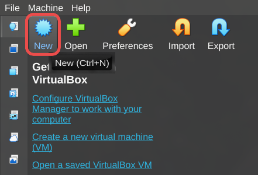
Se abrirá el menu de creación de VM:
Información básica
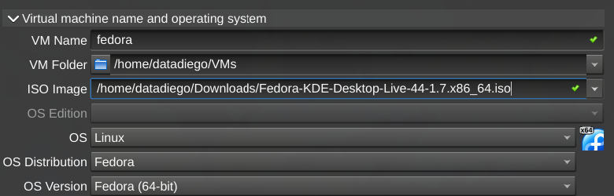
Aqui:
VM Name: El nombre que quieres poner a tu máquina, puedes poner el que quierasVM Folder: Donde quieres que VirtualBox situe los archivos necesarios para arrancar esta máquinaISO Image: Aqui tendrás que seleccionar la imagen iso que descargaste de Fedora
Hardware virtual
En la sección de virtual hardware configuraremos cuanta RAM y CPUs cedemos a la VM:
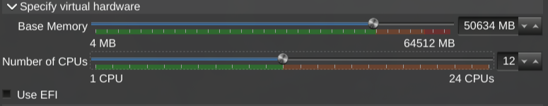
Como regla general, respeta los límites verdes, o tu ordenador puede ralentizarse cuando ejecute de VM por quedarse sin recursos.
Dependiendo del uso que vayas a dar a la máquina es posible que quieras reducir sus recursos, por ejemplo, para dejar un servidor web pequeño o si tendrás múltiples VMs funcionando a la vez.
Aún así, es recomendable darle más potencia durante el arranque e instalación para que esta sea más rápida, una vez tengas tu máquina funcionando puedes cambiar estos ajustes para que consuma menos recursos.
Disco duro
En la sección de virtual hard disk es donde configuramos cuanta memoria de almacenamiento tendrá la máquina.
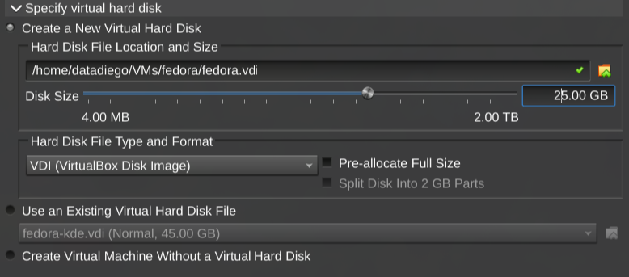
Dependiendo de que vayas a hacer con ella necesitarás más o menos. Para una prueba con 20~25 GB vas sobrado.
Para una máquina que vayas a usar a diario y con muchos paquetes, 40~50GB mejor.
Arrancando la VM
No necesitas configurar nada más, haz click en Ok y verás que se ha creado una nueva máquina virtual en el menú principal de VirtualBox. Haz click en ella y arrancará:
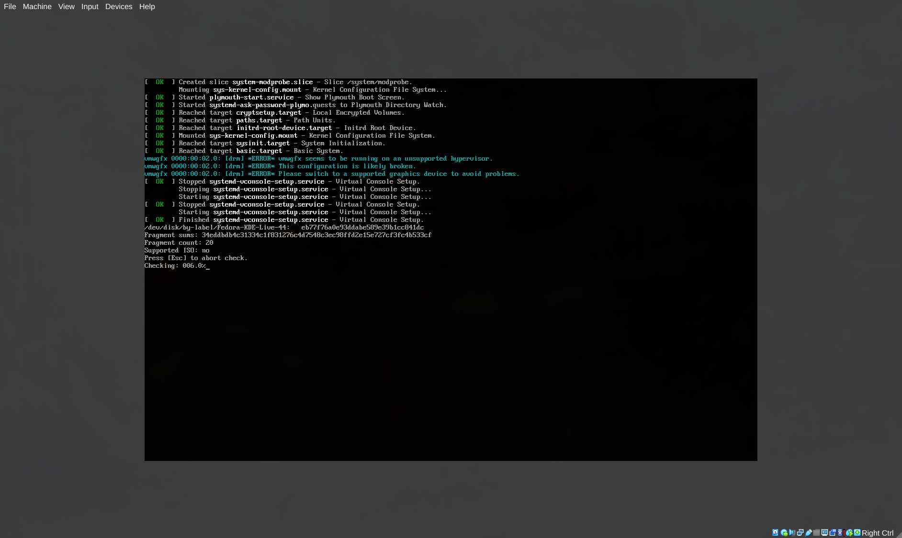
Instalando Linux
Tras el check inicial, arrancará el escritorio de Linux para su instalación:
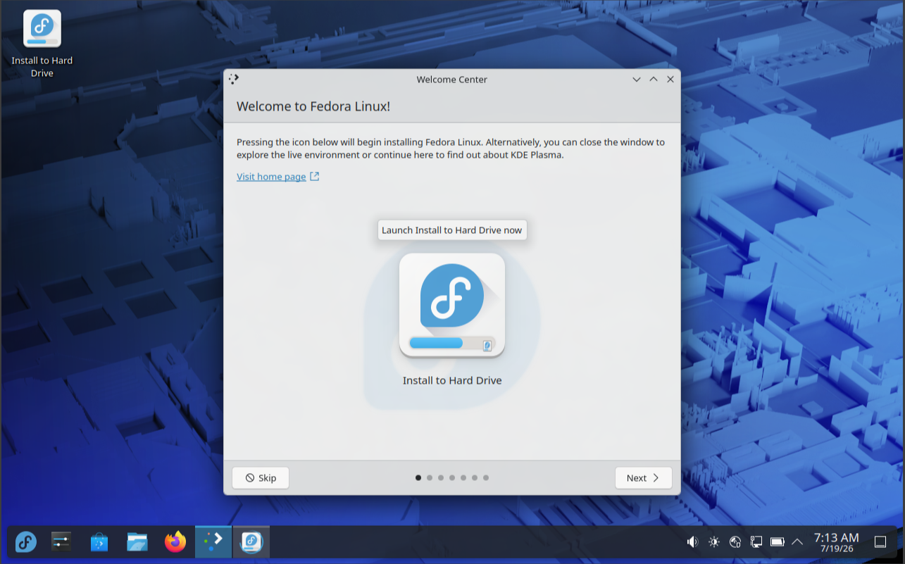
Haz click en Install to Hard Drive, esto te abrirá el instalador.
Primero te preguntará el idioma en el que quieres que esté el sistema, y el layout del teclado:
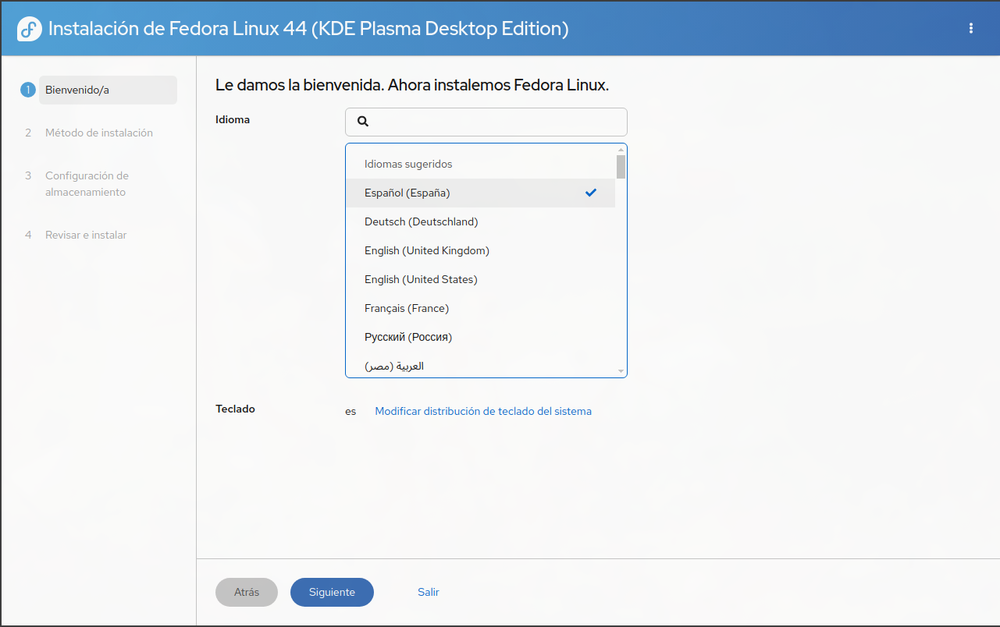
Luego tendrás que elegir en que dispositivo de almacenamiento quieres instalar Fedora, tu VM solo tiene un disco virtual, asi que usamos el que viene por defecto:
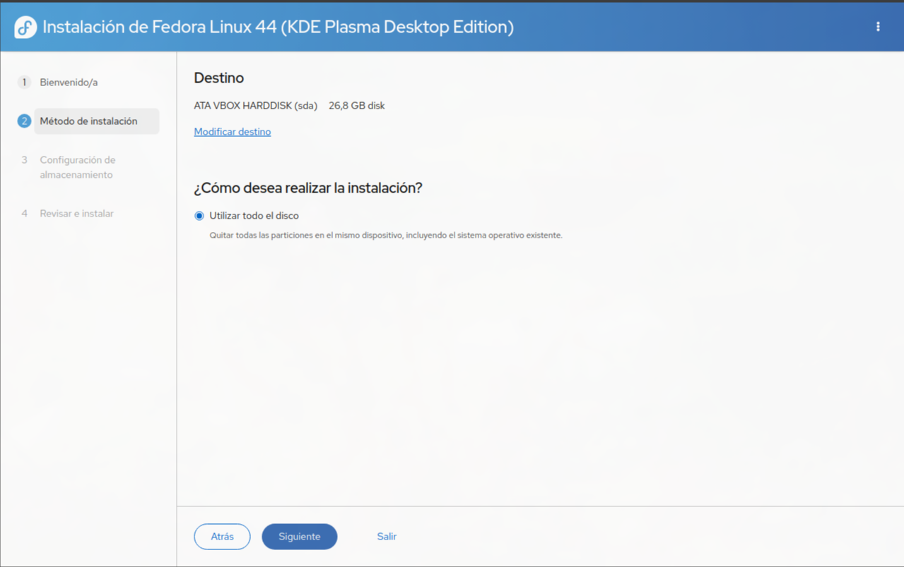
En la configuración de almacenamiento podemos cifrar los datos si queremos, para una VM de este tipo, no es necesario:
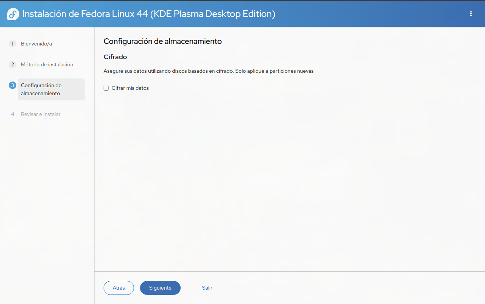
Finalmente, nos piden una confirmación de todos los datos antes de empezar el proceso de instalación:
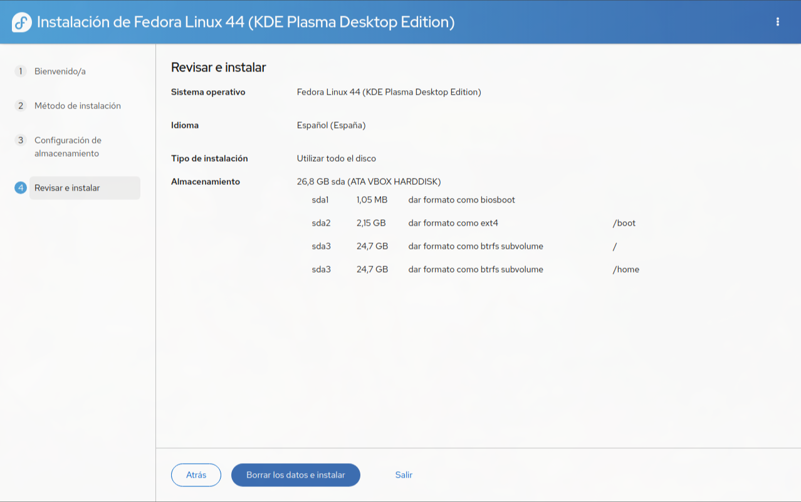
Una vez termine, puedes hacer click en Salir al escritorio en vivo y probar algunas de las funcionalidades que tendrá tu sistema. Una vez estés listo para arrancar tu Fedora, apaga la máquina:
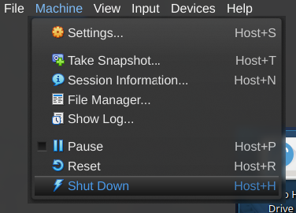
Sacando el disco de Fedora
En nuestra VM tenemos ahora mismo dos dispositivos de almacenamiento conectados de forma virtual.
- Uno es el disco duro virtual en el cual hemos instalado fedora.
- Otro es un dispositivo en el que tenemos nuestra
isopara instalar el sistema operativo, lo que acabamos de ver en el primer arranque.
Por defecto, la máquina siempre arranca con el dispositivo que tiene la iso, para poder acceder a nuestra instalación ve a la configuración de tu máquina:
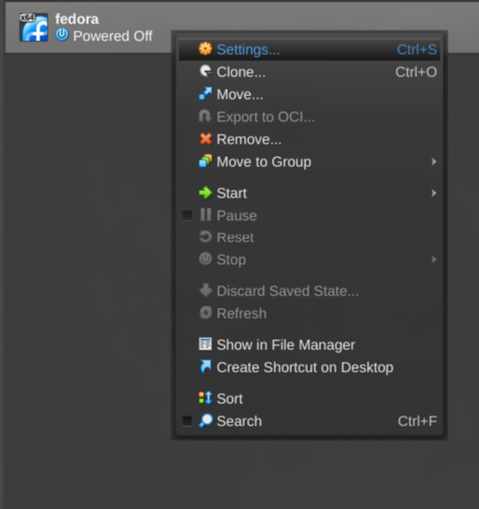
En la sección de Storage verás tus dos dispositivos de almacenamiento, haz click en el que tiene la iso, y luego haz click en eliminarlo:
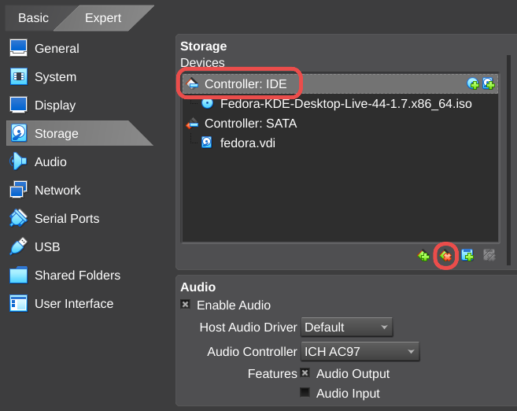
Acabarás con un solo sistema de almacenamiento, tu .vdi o disco virtual:
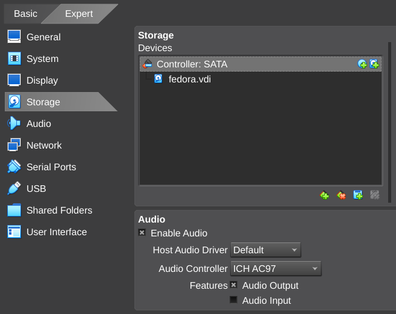
Haz click en OK para confirmar los cambios antes de arrancar de nuevo tu VM.
Iniciando Fedora
Ahora si, cuando arranques tu VM, Fedora te dará la bienvenida:
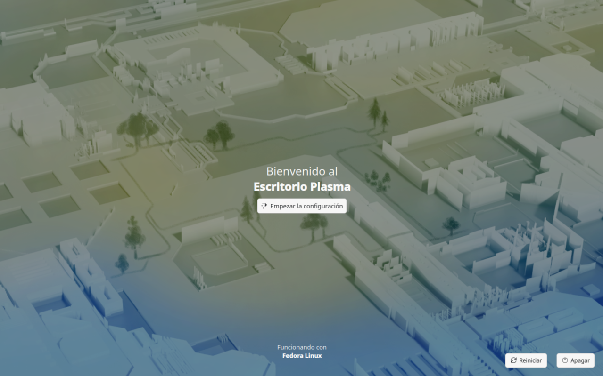
El resto de configuración es bastante sencilla, nos pedirá confirmar lenguaje, elegiremos si queremos modo claro/oscuro, crearemos una cuenta de usuario admin, pondremos un hostname a la vm y elegiremos nuestra zona horaria.
Cuando lo completes podras acceder con tu nombre y usuario que acabas de configurar, y usar tu sistema:
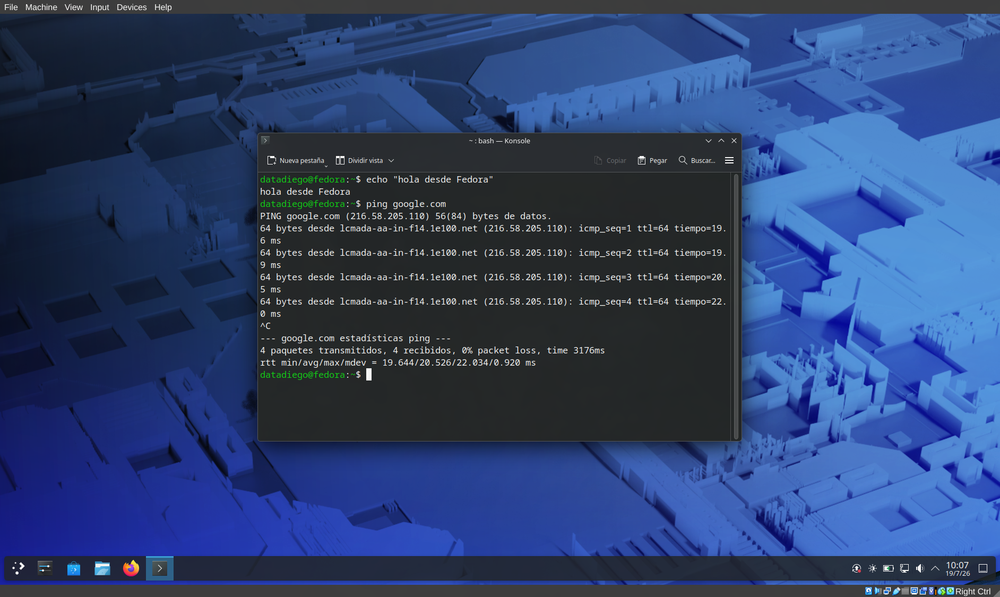